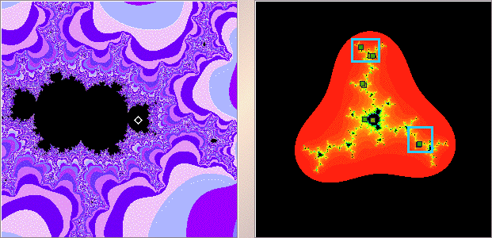

|  |
| The left window shows the magnification, the white diamond indicates the c-value for Julia set shown in the right window. |
| In the right window, shift-click or right click near |
| Once again, the cycle is not obvious. |
| The middle region of the Julia set, and the region above that, appear to contain 2 cycle points each. |
| The lower right and upper central regions are not so clear. Click the blue boxes for a magnification. |
Return to Samples.